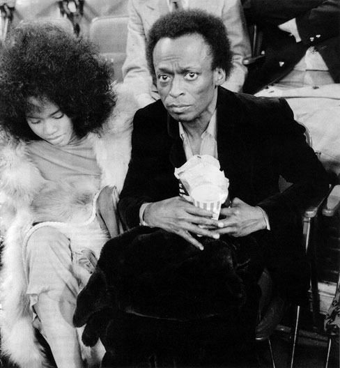
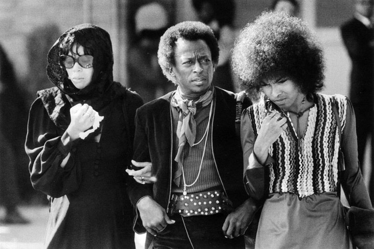
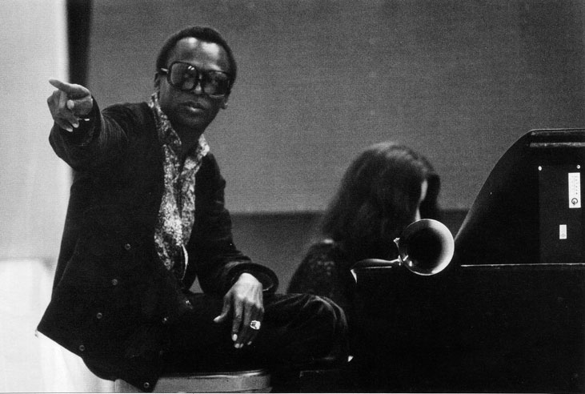
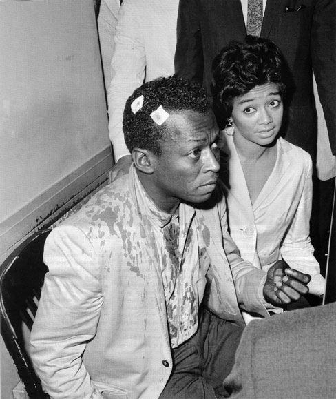
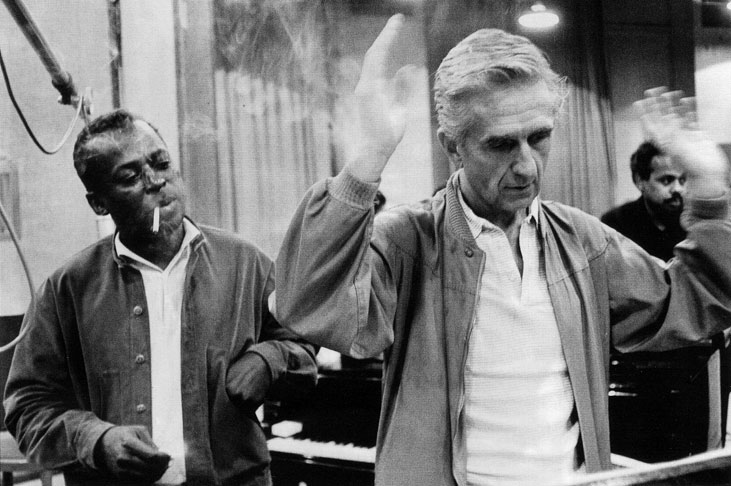
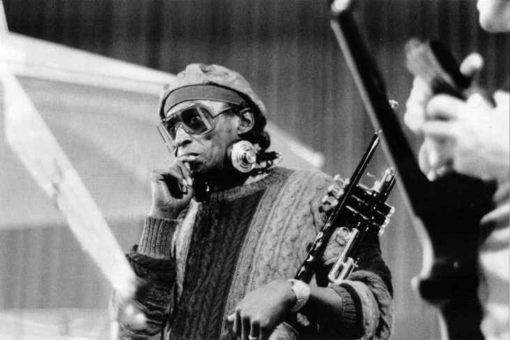
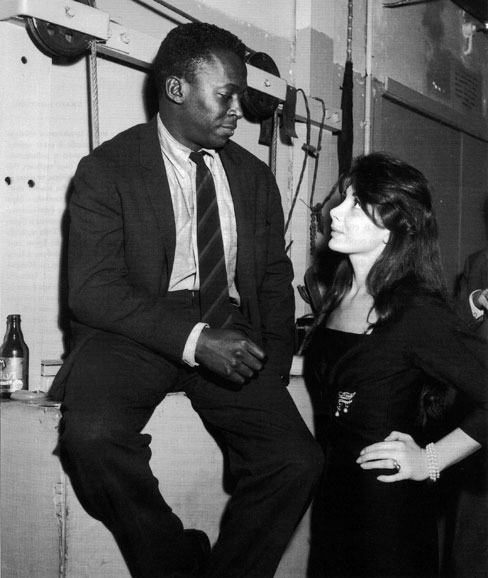

Майлс Дейвис
Майлс Дейвис
Mакар роден под знака на Близнаци, той е безподобен. Има безброй подражатели, но не и двойник. „Аз съм Близнак, мога да бъда много мил и след минута да се превърна в пълна противоположност" - често повтаря Дейвис на жената до себе си. Майлс Дейвис улавя тромпет в ръцете си, когато навършва десет години. Но не след дълго ще каже: „Винаги знам точно какво мога." Малкият Дейвис, третият от семейната династия сьименници, се ражда на 26 май 1926 в заможно семейство на зъболекар в Алтон, Илинойс. В рода Дейвис са все музиканти или меломани. Майка му Клиота е пианистка и цигуларка, сестрата и брат му също, но Майлс се вълнува повече от спорта. Увлича се по бокса и бейзбола. Съдбата обаче му поднася тромпета, преди да е деформирал пръстите или тъпанчетата си. Семейството се мести в Ийст Сейнт Луис край бреговете на Мисисипи. Който се спусне по великата река, казват, опознавал дълбоката Америка. Който последва Майлс в музикалната му авантюра, със сигурност ще опознае жалоните на джаза. На шестнайсет Майлс среща първата си любов Ирен Бърт, която го насърчава да стане професионален музикант. Тя ражда и трите му деца. През 1944 двамата отиват на концерт на прословутия оркестър на Били Екстайн. Майлс е интроверт. Заема кротко мястото си в залата и предвкусва емоцията, когато над него се надвесва самият Дизи Гилеспи. Тромпетистът им е болен, дали може да го замести? О, да, щом се налага, дори ще го измести. Преживяната вечер с Чарли Паркьр и Дизи кара Майлс да стегне куфарите си и скоро той се озовава в Ню Йорк - студент в Julliard School. Денем разучава с интерес партитурите на Прокофиев, но истински се образова вечер на 118-а улица в Minton's Club в Харлем, където дебне появата на Паркър и Гилеспи. „За една нощ в Minton's научавах повече, отколкото за две години в Julliard" - споделя Дейвис. Паркър е разорен от харчове за хероин и намира приют в стаята на студента Майлс. Така „малкият" става част от би-боп тайфата.

Майлс Дейвис присъства на първия мач между Мохамед Али и Джо Фрейзър за световната титла по бокс в свръхтежка категория. Ню Йорк, 8 март 1971
За Майлс би-боп периодът е като потапяне на студен метал в нажежена пещ. Вглъбената му интелектуалност контрастира с импровизационния шемет на бързака Паркьр. Той обаче е от друга сплав и няма да се размекне в опит да имитира майсторите. Напротив. Тогава тромпетът му калява своя мек звук, а добрякьт Дизи Гилеспи смирено му отстъпба своето място в квинтета и сяда на пианото. Подобна любезност между гении е възможна едва ли не само в джаза, където егото отстъпба пред споделения култ към музиката. Майлс дълго страни от компанията на Паркър, която черпи вдъхновение в наркотичния транс. Виртуозният Майлс Дейвис лежи в стаята си и мисли как да избяга от навалицата от ноти на би-бопа в някаква своя идилия. Нейното име е куул джаз. Едба на 22 Майлс се замесва в ноба революция, но този път вече е идеологът й. Тромпетът му намира своята въпросителна интонация, а Париж кани l'enfant terrible Дейвис в престжната зала Плейел. Аплодират го Сартр, Виан, Пикасо. Той е объркан и очарован. Париж разколебава чернокожата му душа, която си е изградила защита срещу белите, „които не отбират грам от джаз". Френската публика обаче го аплодира до екстаз. „За пръв път ме третираха като човек." Майлс е покорен от Високите скули и топлите очи на Жюлиет Греко. Двамата сплитат пословично красивите си пръсти в клубовете на Сен Жермен, потънали в лютия дим на кафяв тютюн.

Майлс Дейвис с втората си съпруга фънк певицата Бети на погребението на Джими Хендрикс, 1 октомври 1970
Замислят се за брак, но имат благоразумието да спестят на музиката тази потенциална катастрофа. Тя щеше да сведе музата на френския шансон до съпруга на чернокож американец или да отдалечи Майлс от музикалната лаборатория на джаза. Дейвис напуска Париж с тъжна усмивка: „В Европа харесват всичко, дори грешките ти. Това все пак е малко прекалено..."
Раздялата с Жюлиет потапя Майлс в четиригодишно безвремие. Той зарязва семейството си и се затваря в хотел. Нощем свири с Паркър, акомпанира на Сара Воон и Били Холидей. Жалостиви проститутки му отпускат пари за психеделични изживявания. Небостъргачите в Манхатън омекват пред разширените му зеници, главата му пулсира от градския шум. „Истинската музика е тишината, която нотите само обграждат." Открива я във фермата на баща си, който с полиция го прибира силом в къщи, далеч от пороците на Ню Йорк. Спасява го новата му любов - Франсис Тейлър. Заради нея зарязва дрогата и предприема нова революция: хард бопът. По това време среща и Джон Колтрейн. Записите им наподобяват разговорите им. Лаконичният Майлс задава тромпетни въпроси, а сладкодумният Колтрейн му отвръща с припрени обяснения на саксофона. „Защо да свиря толкова ноти, щом мога да изсвиря само най-красивите" - споделя Маилс. Веднъж не издържа и възкликва: „Трейн, не можеш да изсвириш всичко наведнъж!" На сцена и в студио музикалните опоненти раждат шедьоври. Но в частния живот стигат до юмруци. Токсикоманът Колтрейн тегли Майлс обратно кьм преживения ад. В антрактите на концертите той зарязва квинтета си и се разхожда сам навън, за да е далеч от изкушенията.

Певицата Лаура Ниро записва заедно с Майлс Дейвис. Ню Йорк, 16 юли 1969
През 1959 един полицай пребива шляещия се негър, преди той да се върне на сцената. Избухва скандал. През 60-те се ражда и стилът Дейвис: елегантни костюми, черни очила и италиански кабриолети добавят дизайнерско лустро към музикалния гений и преврьщат тромпетиста в първата суперзвезда на джаза. Режисьорът Луи Мал го кани да запише музиката на Асансьор за ешафода. Майлс и музикантите му импровизират часове наред, докато на екрана в студиото прожектират кадрите. Саундтракът буквално е отлят по чувствената диаграма на филма. През 1959-а се ражда и Kind of Blue, считан от мнозина за шедьовър на модалния джаз (поредна революция!). Това е най-продаваният албум в историята на джаза. Майлс обаче вече се заслушва в говорящата китара на Джими Хендрикс и великото поколение на рока, което с неосъзната жестокост изблъсква джаза от сцената. Той става все по-сприхав. Настоява за високи хонорари за своята шайка виртуози. Веднъж след операция на гърлото Майлс Дейвис така изригва срещу стиснат продуцент, че окончателно уврежда гласните си струни и до края на живота говори като Кръстника.

Майлс Дейвис със съпругата си Франсис, след като е пуснат под гаранция, 26 август 1959
Накрая един млад сръчко не се сдържа и насред записа му казва (на него!): „Защо не поработиш малко върху техниката си?!" Майлс замълчава. Обаче от тази преглътната обида се ражда нова музикална революция.
Фънкът е новата музика на чернокожите, убеден е Майлс. „Блусьт го продадохме на белите." Поредната му дръзка идея, фюжънът, цели да слее в едно джаза, електрическия звук и фънка с елементи на рок. Този път той привлича Джон Маклафлин и Джо Завинул. Обикаля рок фестивали. Свири на остров Уайт с Чък Кърия и Кийт Джарет. Вятърът, който го вее на откритите сцени, е благословията на свободата, която си е завоювал: той е над стиловете, жанровете и условностите. Над расата и възрастите. Публиката обожава стойката му, подобна на водно конче с тромпет в ръце. Прощава му дори причудливия маниер да свири гърбом към нея.

Майлс Дейвис и продуцентът Джил Евънс записват Quiet Nights. Ню Йорк, 1 август 1962
Той не се страхува от грешни ноти, защото такива не съществуват, свири не това, което пише, а онова, което го няма в партитурата. Журналистите прекосяват света само за няколко минути с мъдреца на джаза. Дебнат афоризмите му. Дали е първият след Бога? „Няма първи. Аз съм вторият" - казва Майлс. Обективите жадно го ловят. Един френски фотограф се втурва с конкорда за Ню Йорк. Има час благословия да снима иконоподобния Майлс и го моли да застане в контражур с хоризонтиран тромпет. „Разкарай се оттук, да не съм тръбач на хиподрума, та да свиря с хоризонтиран тромпет" - отпраща го Дейвис. След продължителни журналистически увещания най-накрая се съгласява да даде интервю и за списание Playboy. Дълго време обаче отказва с мотива: „Това е списание за бели. Белите ти задават въпроси, които водят до откровения, а след това се подиграват с мислите ти. Освен това в Playboy няма чернокожи жени. Има само блондинки с големи цици и без никакви задници. Ние, чернокожите, харесваме големи задници."

Майлс Дейвис по време на запис, 1985
През целия си живот Майлс бяга от собствената си сянка. Щом музикалните му находки се превърнат в стил, той губи интерес и търси новото. Приятели няма. В края на 70-те умората взема връх и го налягат всякакви болести. Напуска сцената. Изживява параноични кризи. Взима нюйоркските снежинки по ферарито си за падащ от небето кокаин. Веднъж среща съседката си художничка в асансьора. Тя изпитва страх от него, но Майлс изрича някьде между етажите: „Музиката е рисунка за слушане, а рисуването е музика за гледане." Така госпожица Гелбард се оказва последната му спътница и учителка по живопис. Той разкива неочакван талант, рисува непрекъснато, обагря с четката си дори мебелите в дома си. Майлс е и лицето на джаза в епохата на властващата телевизия. „Не ме наричайте легенда. Легендата е старец с бастун, когото всички помнят с това, което някога е сторил" - казва Майлс Дейвис. Умира на 28 септември 1991 в Санта Моника по непотбърдени данни от СПИН. В едно от последните си интервюта на въпроса, какво счита за най-значимото си постижение в живота, той отвръща: „Пет-шест пъти промених музиката."

Майлс Дейвис и Жулиет Греко в Club Saint Germain. Париж 1958
Разочарован съм от сина си Грегори. Върна се от Виетнам и ми създава само неприятности. Разочарован съм и от брат му Майлс IV. Сестра им Черил завърши колумбииския университет и работи като учителка, доволен съм от нея. Майлс Дейвис